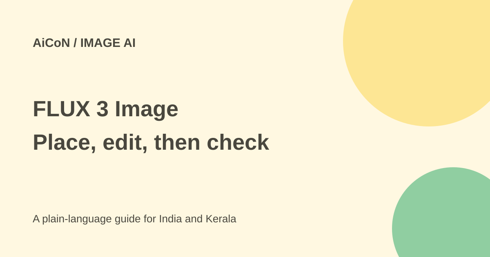

FLUX 3 Image: boxes, references and cost checks
FLUX 3 Image is Black Forest Labs' image generation and editing model. Its official docs support box-based layout, targeted edits and up to ten reference images. Treat precise-edit claims as capabilities to test, not a promise of pixel-perfect output.

What is a bounding box?
A bounding box describes where an element belongs. In the official API, a box is written as top, left, bottom and right values on a 0-to-1000 grid. You name the object and describe what goes there. A whole-scene prompt supplies the setting, light and style.
The model can also use a normal text prompt, edit an image or combine references. The docs list output tiers through 4K. Up to ten input references are allowed, each from 256 by 256 pixels to 16 megapixels in the direct API.
Why a creator might use it
You could plan the position of a product, headline or background object in a poster. A Kerala shop could test an illustrative social graphic, but it should not publish generated labels, logos or product details as accurate without checking them.
The maker says targeted edits can leave the rest unchanged. An AI-generated product likeness may still differ from the actual product. Inspect fine text, proportions, faces and edges before using it in an advertisement.
How to try it
- Open the official product page and documentation. Choose Playground for a browser trial or the direct API for development.
- Check the exact model, resolution, account allowance and price before generating.
- Start with a simple scene prompt. If using boxes, name each element and give its position.
- Add only reference images you have permission to use. Explain each reference's role instead of assuming the order is obvious.
- For an edit, state what changes and what must stay the same. Keep the original file separately.
- Check the grounding setting. Official docs say web and image search is on by default; false uses only the prompt and is described as faster.
- Generate a small test, compare it with the original and review costs before repeating at high resolution.
Price and licence
The public pricing page is pay-as-you-go, but its fetched calculator did not clearly identify a selected FLUX3 model/rate. We do not turn that ambiguous number into a promised FLUX3 price. Check the current model-specific calculator or account screen. No fixed INR price or free-trial allowance is confirmed.
The product page directs commercial weights enquiries to sales. Do not assume the weights are available free under an unrestricted licence. Hosted API access and self-hosted commercial weights are different choices.
Privacy and safety
A hosted image request sends your prompts and references to a service. Read its current terms before using customer or family photos. Do not make deceptive images of people or impersonate a brand. Search grounding can add information to generation, but it does not guarantee truth or rights clearance.
What changed since the original post?
The direct official API docs confirm ten references and explain grid order and default grounding. We avoid promising an unverified price. Provider-specific requirements can differ from the direct API. No image was generated in this review.
Frequently asked questions
Does it require boxes?
No. The docs also support ordinary text prompts.
Is every unchanged area guaranteed identical?
Do not assume so. Compare the actual output with the source.
Can I use ten references everywhere?
The direct API lists ten. Check your provider's specific limits.
Sources: BFL product page · Official FLUX3 API overview · BFL pricing . Checked 7 October 2026.